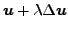
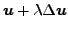
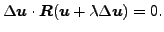

In the case of static calculations with face-to-face penalty contact the
displacement increment
 in each iteration is scaled
with a scalar
in each iteration is scaled
with a scalar  in order to get better convergence.
in order to get better convergence.  is
determined such that the residual (i.e. external force minus internal force) of the scaled solution
 is orthogonal to the displacement increment:
is
determined such that the residual (i.e. external force minus internal force) of the scaled solution
 is orthogonal to the displacement increment:
|  | (443) |
Now, the residual for  is known from the previous increment, and
the residual for
is known from the previous increment, and
the residual for  is known from the present increment. In between a
linear relationship is assumed (cf. Figure 131), which yields the
value of
is known from the present increment. In between a
linear relationship is assumed (cf. Figure 131), which yields the
value of  without extra calculations. With the
*CONTROLS card the user can specify a value for
without extra calculations. With the
*CONTROLS card the user can specify a value for
 (default: 0.25) and
(default: 0.25) and
 (default: 1.01).
(default: 1.01).